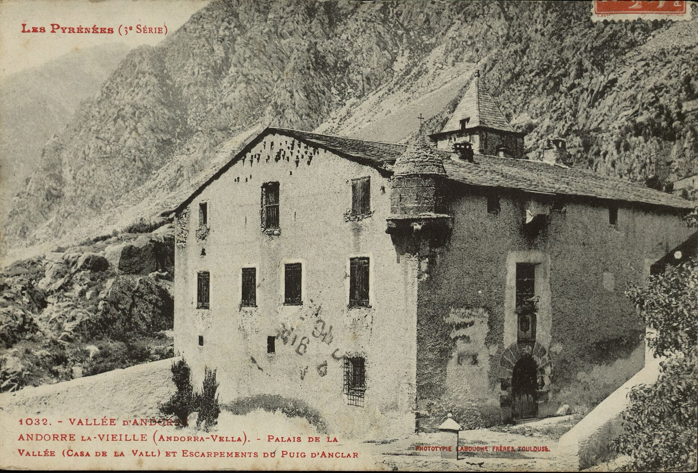
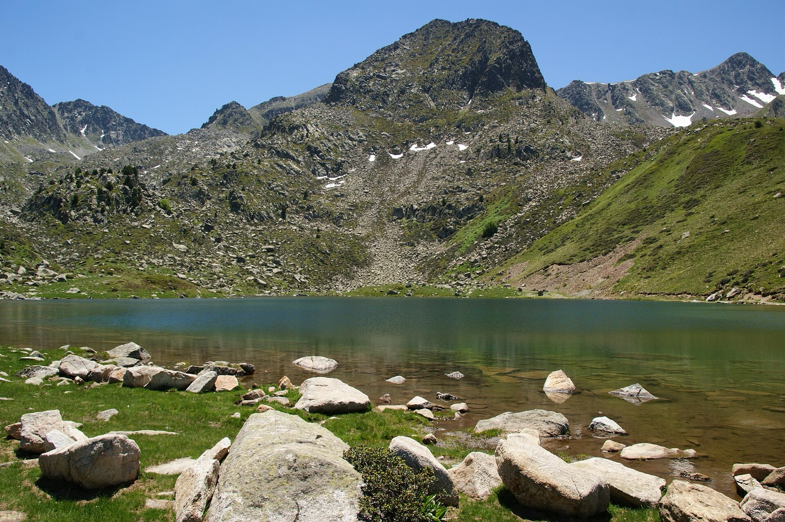
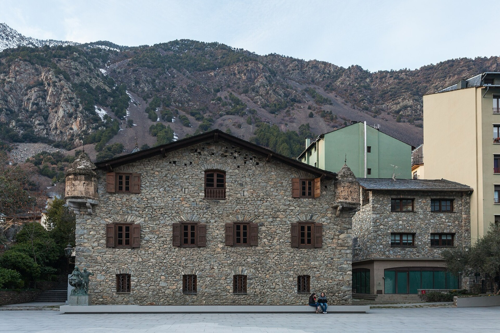

82,1 %
Quién sabe más
Cada barra es un modelo. La altura es la parte de las preguntas que acierta: el 100 % sería la cima del Coma Pedrosa, 2.942 m. La marca clara de arriba es el intervalo de confianza del 95 %; si dos se solapan, no hay ganador claro.33 modelos evaluados; 33 ya tienen todos los tests puntuados y 0 las 926 preguntas. Las notas «solo tests» cuentan las preguntas de cuatro opciones; las abiertas y las trampas se añadirán cuando las puntúe el juez. Una ejecución «en curso» aún no es comparable con las completas.
La tabla, modelo a modelo
google/gemini-3.1-pro-preview82,1 %Tests
vertex
Tests 82,1 % (604) · Abiertas: juez pendiente · Trampas: juez pendiente
Gemini 3.8 Flash82,1 %Tests
Google · cerrado · API · también es el juez
Tests 82,1 % (604) · Abiertas: juez pendiente · Trampas: juez pendiente
google/gemini-3.7-flash81,6 %Tests
vertex
Tests 81,6 % (604) · Abiertas: juez pendiente · Trampas: juez pendiente
google/gemini-4-argon81,3 %Tests
vertex
Tests 81,3 % (604) · Abiertas: juez pendiente · Trampas: juez pendiente
google/gemini-3.5-flash80,6 %Tests
vertex
Tests 80,6 % (604) · Abiertas: juez pendiente · Trampas: juez pendiente
google/gemini-3-flash-preview79,8 %Tests
vertex
Tests 79,8 % (604) · Abiertas: juez pendiente · Trampas: juez pendiente
google/gemini-3.6-flash79,1 %Tests
vertex
Tests 79,1 % (604) · Abiertas: juez pendiente · Trampas: juez pendiente
DeepSeek V4 Pro73,5 %Tests
DeepSeek · abierto · Ollama Cloud
Tests 73,5 % (604) · Abiertas: juez pendiente · Trampas: juez pendiente
DeepSeek V4.1 Flash 101772,0 %Tests
DeepSeek · abierto · Ollama Cloud
Tests 72,0 % (604) · Abiertas: juez pendiente · Trampas: juez pendiente
Kimi K370,0 %Tests
Moonshot · abierto · Ollama Cloud
Tests 70,0 % (604) · Abiertas: juez pendiente · Trampas: juez pendiente
DeepSeek V4.1 Flash69,7 %Tests
DeepSeek · abierto · Ollama Cloud
Tests 69,7 % (604) · Abiertas: juez pendiente · Trampas: juez pendiente
GLM 5.269,7 %Tests
Z.ai · abierto · Ollama Cloud
Tests 69,7 % (604) · Abiertas: juez pendiente · Trampas: juez pendiente
google/gemini-3.1-flash-lite67,9 %Tests
vertex
Tests 67,9 % (604) · Abiertas: juez pendiente · Trampas: juez pendiente
GLM 5.3 Flash66,2 %Tests
Z.ai · abierto · Ollama Cloud
Tests 66,2 % (604) · Abiertas: juez pendiente · Trampas: juez pendiente
Beam66,1 %Tests
abierto · Ollama Cloud
Tests 66,1 % (604) · Abiertas: juez pendiente · Trampas: juez pendiente
Nemotron 3 Ultra65,7 %Tests
NVIDIA · abierto · Ollama Cloud
Tests 65,7 % (604) · Abiertas: juez pendiente · Trampas: juez pendiente
google/gemini-3.5-flash-lite62,4 %Tests
vertex
Tests 62,4 % (604) · Abiertas: juez pendiente · Trampas: juez pendiente
kimi-k2.661,9 %Tests
abierto · Ollama Cloud
Tests 61,9 % (604) · Abiertas: juez pendiente · Trampas: juez pendiente
GLM 5.361,6 %Tests
Z.ai · abierto · Ollama Cloud
Tests 61,6 % (604) · Abiertas: juez pendiente · Trampas: juez pendiente
Mistral Large 461,1 %Tests
Mistral · abierto · Ollama Cloud
Tests 61,1 % (604) · Abiertas: juez pendiente · Trampas: juez pendiente
Gemma 4 31B56,1 %Tests
Google · abierto · Ollama Cloud
Tests 56,1 % (604) · Abiertas: juez pendiente · Trampas: juez pendiente
Nemotron 3 Super54,0 %Tests
NVIDIA · abierto · Ollama Cloud
Tests 54,0 % (604) · Abiertas: juez pendiente · Trampas: juez pendiente
Gemma 4 12B50,8 %Tests
Google · abierto · local
Tests 50,8 % (604) · Abiertas: juez pendiente · Trampas: juez pendiente
gpt-oss 120B49,7 %Tests
OpenAI · abierto · Ollama Cloud
Tests 49,7 % (604) · Abiertas: juez pendiente · Trampas: juez pendiente
Gemma 4 26B-A4B47,5 %Tests
Google · abierto · Vertex
Tests 47,5 % (604) · Abiertas: juez pendiente · Trampas: juez pendiente
MiniMax M345,7 %Tests
MiniMax · abierto · Ollama Cloud
Tests 45,7 % (604) · Abiertas: juez pendiente · Trampas: juez pendiente
MiniMax M3.1 Flash45,5 %Tests
MiniMax · abierto · Ollama Cloud
Tests 45,5 % (604) · Abiertas: juez pendiente · Trampas: juez pendiente
gemma3:27b44,7 %Tests
ollama
Tests 44,7 % (604) · Abiertas: juez pendiente · Trampas: juez pendiente
Gemma 3 12B43,4 %Tests
Google · abierto · local
Tests 43,4 % (604) · Abiertas: juez pendiente · Trampas: juez pendiente
Gemma 4 E4B42,4 %Tests
Google · abierto · local
Tests 42,4 % (604) · Abiertas: juez pendiente · Trampas: juez pendiente
gpt-oss 20B41,4 %Tests
OpenAI · abierto · Ollama Cloud
Tests 41,4 % (604) · Abiertas: juez pendiente · Trampas: juez pendiente
Gemma 4 E2B38,1 %Tests
Google · abierto · local
Tests 38,1 % (604) · Abiertas: juez pendiente · Trampas: juez pendiente
gemma3:4b36,6 %Tests
ollama
Tests 36,6 % (604) · Abiertas: juez pendiente · Trampas: juez pendiente
Dataset v1-esborrany (ec314f7d6239) · juez Gemini 3.8 Flash · generado el 29/10/2026.
Dónde aciertan y dónde fallan
La cifra grande es la nota del modelo elegido en cada dominio. Las barritas son todos los modelos con los tests completos, en el orden de la clasificación; la amarilla es el modelo elegido. Pasa por encima de una barrita para ver qué modelo es. En oscuro, donde el modelo elegido falla más.
Historia
82,3 %85 preguntas · Mejor: google/gemini-4-argon, 88,2 %
Instituciones
78,6 %70 preguntas · Mejor: google/gemini-3.7-flash, 81,4 %
Sociedad
85,9 %78 preguntas · Mejor: google/gemini-3.1-pro-preview, 85,9 %
Lengua
80,7 %57 preguntas · Mejor: google/gemini-3.1-pro-preview, 80,7 %
Economía
77,8 %54 preguntas · Mejor: google/gemini-3.7-flash, 81,5 %
Cultura
81,5 %54 preguntas · Mejor: Gemini 3.8 Flash, 87,0 %
Deportes
83,7 %49 preguntas · Mejor: Gemini 3.8 Flash, 87,8 %
Territorio
78,3 %46 preguntas · Mejor: google/gemini-4-argon, 87,0 %
Costumbres
77,1 %35 preguntas · Mejor: Gemini 3.8 Flash, 82,9 %
Política
92,0 %25 preguntas · Mejor: google/gemini-3.7-flash, 96,0 %
Gastronomía
82,6 %23 preguntas · Mejor: google/gemini-3.1-pro-preview, 82,6 %
Vida cotidiana
90,5 %21 preguntas · Mejor: google/gemini-3.1-pro-preview, 90,5 %
Personas
100,0 %7 preguntas · Mejor: google/gemini-3.1-pro-preview, 100,0 %

Pruébalo
Pregunta
Cargando una pregunta…
Cómo se puntúa cada respuesta
Primero, cuatro opciones y una buena. El modelo dice una letra y se corrige sola.
Después, respuestas libres. El juez las compara con la referencia: 0, 1 o 2 puntos.
Al final, una premisa falsa. Solo puntúa quien la rechaza.
De dónde salen las preguntas
Cada pregunta sale de un artículo sobre Andorra, lleva un contexto escrito con palabras propias y se ha verificado contra el original. Las preguntas están en catalán, la lengua oficial de Andorra.

Los modelos generales saben decir la capital. Lo que medimos es todo lo que hay detrás: los pariatges, las parroquias, las fiestas, el contrabando, la lengua, la gente.
Preguntas y respuestas

¿Cómo evalúo mi modelo?
Clona el repositorio y ejecuta python3 tools/executa.py --model ollama:tu-modelo. Funciona con Ollama, Ollama Cloud, OpenAI, Anthropic, OpenRouter y Vertex. Después, python3 tools/puntua.py resultats/<nombre> y python3 tools/web.py.
¿Qué ve el modelo?
Solo la pregunta, y las cuatro opciones si es un test. Nunca el contexto ni la respuesta de referencia. El mismo prompt y temperatura 0 para todos.
¿Quién puntúa las respuestas abiertas?
Un juez fijo, Gemini 3.8 Flash, con la respuesta de referencia, los hechos clave y una lista de errores a penalizar. Una respuesta con uno de esos errores no puede sacar la nota máxima.
¿El juez es imparcial?
No del todo: un juez solo detecta los errores que conoce. Por eso cada pregunta lleva errores típicos. Cuando el modelo evaluado es el mismo juez, la tabla lo marca.
¿Qué es una pregunta trampa?
Una pregunta que da por bueno un hecho falso. Puntúa el modelo que lo rechaza y dice qué es cierto; el que se inventa una explicación saca un cero.
¿Qué son las preguntas no vistas?
Preguntas sobre 41 fichas reservadas que nunca entran en el entrenamiento de maia. Miden si un modelo se inventa lo que no sabe.
¿Por qué hay un intervalo?
Porque las preguntas son una muestra. El intervalo sale de remuestrearlas mil veces. Dos notas con intervalos que se solapan no se pueden ordenar.
¿Por qué ahora solo cuentan los tests?
Las abiertas y las trampas las puntúa el juez, y esa pasada aún no se ha hecho. Cuando se haga, la nota incluirá las 926 preguntas.
¿maia juega con ventaja?
maia es el modelo del proyecto que ha hecho el benchmark. Por eso el método, las preguntas y el código son públicos, y la tabla lo marca.
¿Mide también cómo habla?
Aún no. La parte de lengua (perplejidad sobre habla real, test dialectal y prueba ciega con andorranos) está en construcción.